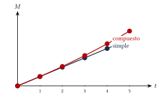

Capítulo 51
Elementos financieros básicos
IPN CENEVAL
Las matemáticas financieras estudian el valor del dinero a través del tiempo.
En este capítulo aprenderás a:
- calcular aumentos y descuentos;
- determinar precios antes y después de impuestos;
- calcular ganancias y pérdidas;
- identificar los elementos de una operación financiera;
- distinguir entre interés simple e interés compuesto;
- convertir tasas y periodos de tiempo.
51.1 Conceptos fundamentales#
En una operación financiera aparecen los siguientes elementos:
- Capital \(C\): cantidad inicial de dinero invertida, prestada o adeudada.
- Interés \(I\): ganancia obtenida o costo pagado por utilizar el capital.
- Tasa de interés \(i\): proporción del capital que se genera como interés en cada periodo.
- Tiempo \(t\): duración de la operación.
- Monto \(M\): cantidad acumulada al final de la operación.
La relación entre capital, interés y monto es:
Por tanto:
y:
| Símbolo | Concepto | Ejemplo |
|---|---|---|
| \(C\) | Capital inicial | Dinero invertido |
| \(I\) | Interés | Ganancia o costo |
| \(i\) | Tasa de interés | \(8\%\) anual |
| \(t\) | Tiempo | \(3\) años |
| \(M\) | Monto final | Capital más interés |
La tasa y el tiempo deben expresarse en la misma unidad.
Si la tasa es anual, el tiempo debe expresarse en años. Si la tasa es mensual, el tiempo debe expresarse en meses.
51.2 Porcentajes y factores multiplicativos#
Para utilizar un porcentaje en una fórmula debe convertirse a decimal.
Por ejemplo:
51.2.1 Aumento porcentual#
Si una cantidad \(C\) aumenta \(p\%\), el valor final es:
El factor:
se denomina factor de aumento.
51.2.2 Descuento porcentual#
Si una cantidad \(C\) disminuye \(p\%\), el valor final es:
El factor:
se denomina factor de descuento.
| Operación | Factor | Ejemplo |
|---|---|---|
| Aumento del \(15\%\) | \(1+0.15\) | \(1.15\) |
| Descuento del \(20\%\) | \(1-0.20\) | \(0.80\) |
| Aumento del \(8\%\) | \(1+0.08\) | \(1.08\) |
| Descuento del \(35\%\) | \(1-0.35\) | \(0.65\) |
51.3 Aumentos y descuentos#
Un artículo cuesta:
Si su precio aumenta un \(15\%\), determina el nuevo precio.
Ver solución
El factor de aumento es:
Multiplicamos:
Por tanto, el nuevo precio es:
Una camisa cuesta:
Si tiene un descuento del \(20\%\), determina el precio final.
Ver solución
El factor de descuento es:
Multiplicamos:
Por tanto, el precio final es:
51.3.1 Cantidad aumentada o descontada#
El valor del aumento es:
El valor del descuento es:
Después se suma o se resta, según corresponda.
Calcula el descuento y el precio final de un artículo de:
con descuento del \(25\%\).
Ver solución
El descuento es:
El precio final es:
Por tanto:
y el precio final es:
51.4 Porcentajes sucesivos#
Cuando se aplican varios aumentos o descuentos, deben multiplicarse los factores correspondientes.
No deben sumarse directamente los porcentajes.
Una cantidad aumenta \(20\%\) y después disminuye \(20\%\).
Determina el cambio total.
Ver solución
El factor de aumento es:
El factor de descuento es:
El factor total es:
La cantidad final representa el:
de la cantidad inicial.
Por tanto, existe una disminución total del:
Una tienda aplica un descuento del \(30\%\) y después otro descuento del \(10\%\) sobre el precio rebajado.
Determina el descuento total equivalente.
Ver solución
Los factores de descuento son:
y:
El factor total es:
El precio final es el \(63\%\) del precio original.
Por tanto, el descuento equivalente es:
Dos descuentos del \(20\%\) no equivalen a un descuento del \(40\%\).
El factor total es:
por lo que el descuento equivalente es del:
51.5 Cambio porcentual#
Si una cantidad cambia de un valor inicial \(V_i\) a un valor final \(V_f\), el cambio porcentual es:
Si el resultado es positivo, existe un aumento.
Si el resultado es negativo, existe una disminución.
El precio de un producto cambia de:
a:
Calcula el aumento porcentual.
Ver solución
El aumento es:
Dividimos entre el valor inicial:
Convertimos a porcentaje:
Por tanto, el precio aumentó:
El cambio porcentual siempre se calcula respecto del valor inicial, no respecto del valor final.
51.6 Impuestos#
En los ejercicios de este capítulo se utiliza una tasa de IVA del:
Si \(P\) es el precio antes del impuesto, el importe del IVA es:
El precio final es:
Equivalentemente:
Para recuperar el precio antes del impuesto:
Un producto cuesta:
antes del IVA.
Calcula el importe del IVA y el precio final.
Ver solución
El importe del IVA es:
El precio final es:
También puede obtenerse directamente:
Por tanto:
y el precio final es:
El precio de un artículo con IVA incluido es:
Calcula el precio antes del impuesto.
Ver solución
Dividimos entre el factor:
Por tanto, el precio antes del IVA es:
El importe del impuesto es:
Por tanto:
Para eliminar un impuesto incluido no debe restarse directamente el porcentaje al precio final.
Por ejemplo:
no produce el precio original. El procedimiento correcto es:
51.7 Ganancia y pérdida#
La ganancia es la diferencia entre el precio de venta y el costo:
La pérdida es:
Si la ganancia se calcula como porcentaje del costo:
Si la pérdida se calcula como porcentaje del costo:
51.7.1 Precio de venta con ganancia#
Si se desea una ganancia del \(p\%\) sobre el costo:
51.7.2 Precio de venta con pérdida#
Si se vende con una pérdida del \(p\%\) sobre el costo:
Un comerciante compra un producto en:
y desea obtener una ganancia del \(30\%\) sobre el costo.
Calcula el precio de venta.
Ver solución
El factor de aumento es:
Entonces:
Por tanto, el precio de venta es:
Un producto se vende en:
con una ganancia del \(15\%\) sobre el costo.
Calcula el costo.
Ver solución
Sea \(C\) el costo.
Despejamos:
Por tanto, el costo fue:
La ganancia puede calcularse respecto del costo o respecto del precio de venta.
Estas bases producen porcentajes diferentes. Debe identificarse claramente la base indicada en el problema.
51.8 Interés simple#
En el interés simple, el interés de cada periodo se calcula siempre sobre el capital inicial.
La fórmula es:
El monto final es:
Sustituyendo la fórmula del interés:
Factorizamos:
| Variable | Significado |
|---|---|
| \(C\) | Capital inicial |
| \(i\) | Tasa por periodo en forma decimal |
| \(t\) | Número de periodos |
| \(I\) | Interés generado |
| \(M\) | Monto final |
Se invierten:
al \(8\%\) anual durante \(3\) años con interés simple.
Calcula el interés y el monto.
Ver solución
Identificamos:
Calculamos el interés:
El monto es:
Por tanto:
y:
51.9 Interés compuesto#
En el interés compuesto, los intereses se agregan al capital y también generan intereses en los periodos siguientes.
El monto es:
El interés total se obtiene mediante:
Se invierten:
al \(8\%\) anual durante \(3\) años con interés compuesto.
Calcula el monto y el interés.
Ver solución
Identificamos:
Calculamos:
El interés es:
Por tanto:
e:
51.10 Interés simple e interés compuesto#
| Característica | Interés simple | Interés compuesto |
|---|---|---|
| Base del interés | Capital inicial | Monto acumulado |
| Crecimiento | Lineal | Exponencial |
| Interés | \(I=Cit\) | \(I=M-C\) |
| Monto | \(M=C(1+it)\) | \(M=C(1+i)^t\) |
| Capitalización | No | Sí |

Durante un solo periodo, el interés simple y el compuesto producen el mismo resultado si utilizan el mismo capital y la misma tasa.
La diferencia aparece después de la primera capitalización.
51.11 Conversión del tiempo#
La unidad del tiempo debe coincidir con la unidad de la tasa.
Las conversiones más frecuentes son:
Si la tasa es anual y el tiempo está en meses:
Si el tiempo está en días y se utiliza año comercial:
Un capital se invierte con una tasa anual durante \(5\) meses.
Expresa el tiempo en años.
Ver solución
Por tanto, deben utilizarse:
de año en la fórmula.
La convención de \(360\) días debe utilizarse únicamente cuando el problema indique año comercial o cuando sea la convención declarada para el ejercicio.
Si se indica año calendario, se utilizan \(365\) días.
51.12 Conversión proporcional de tasas#
En problemas de interés simple, las tasas pueden convertirse proporcionalmente.
Si una tasa anual es:
la tasa mensual proporcional es:
La tasa diaria comercial es:
Por el contrario:
y:
Una tasa anual del \(18\%\) se aplica durante \(5\) meses.
Calcula la tasa proporcional correspondiente al periodo.
Ver solución
La tasa mensual es:
Para \(5\) meses:
Por tanto, la tasa correspondiente al periodo es:
Equivalentemente:
La conversión proporcional de tasas se utiliza directamente en interés simple.
En interés compuesto, una tasa efectiva equivalente requiere considerar la capitalización y no siempre se obtiene dividiendo o multiplicando por el número de periodos.
51.13 Cálculo del valor original#
Si se conoce el valor después de un aumento del \(p\%\):
por lo que:
Si se conoce el valor después de un descuento del \(p\%\):
por lo que:
Después de un descuento del \(20\%\), un artículo cuesta:
Calcula el precio original.
Ver solución
Después del descuento se conserva el:
del precio original.
Sea \(P\) el precio original:
Despejamos:
Por tanto, el precio original era:
51.14 Procedimiento rápido#
Aumentos y descuentos#
- Convierte el porcentaje a decimal.
- Utiliza: \[1+p\] para un aumento.
- Utiliza: \[1-p\] para un descuento.
- Multiplica por la cantidad inicial.
Valor original#
- Identifica el factor aplicado.
- Divide el valor final entre ese factor.
Interés simple#
- Identifica: \[C,\quad i,\quad t.\]
- Convierte la tasa a decimal.
- Iguala las unidades de \(i\) y \(t\).
- Calcula: \[I=Cit.\]
- Calcula: \[M=C+I.\]
Interés compuesto#
- Identifica: \[C,\quad i,\quad t.\]
- Convierte la tasa a decimal.
- Verifica el periodo de capitalización.
- Calcula: \[M=C(1+i)^t.\]
- Si se solicita el interés, calcula: \[I=M-C.\]
51.15 Resumen#
Monto:
Aumento:
Descuento:
Cambio porcentual:
Precio con impuesto del \(16\%\):
Precio antes del impuesto:
Ganancia:
Interés simple:
Monto con interés simple:
Monto con interés compuesto:
Interés compuesto generado:
51.16 Errores frecuentes#
Recuerda:
- Un porcentaje debe convertirse a decimal antes de utilizarse en una fórmula.
- Un aumento utiliza: \[1+p.\]
- Un descuento utiliza: \[1-p.\]
- Los porcentajes sucesivos no se suman directamente.
- Para recuperar un valor inicial debe dividirse entre el factor aplicado.
- La ganancia porcentual debe calcularse respecto de la base indicada.
- La tasa y el tiempo deben encontrarse en la misma unidad.
- En interés simple, el interés se calcula sobre el capital inicial.
- En interés compuesto, los intereses se capitalizan.
- Una tasa del \(8\%\) debe escribirse: \[0.08,\] no \(8\).
- La conversión proporcional de tasas no debe confundirse con una tasa efectiva equivalente de interés compuesto.
- Los resultados monetarios deben redondearse generalmente a dos cifras decimales.
51.17 Ejercicios propuestos#
Un artículo cuesta:
Si su precio aumenta un \(25\%\), calcula el nuevo precio.
Ver solución
Un teléfono cuesta:
Si tiene un descuento del \(18\%\), calcula el descuento y el precio final.
Ver solución
Descuento: \(\$8{,}500 \times 0.18 = \$1{,}530\). Precio final: \(\$8{,}500 - \$1{,}530 = \$6{,}970\).
Un producto cuesta:
antes del impuesto. En este ejercicio se aplica una tasa del \(16\%\).
Calcula el impuesto y el precio final.
Ver solución
Impuesto: \(\$750 \times 0.16 = \$120\). Precio final: \(\$750 + \$120 = \$870\).
El precio final de un artículo, después de aplicar una tasa del \(16\%\), es:
Calcula el precio antes del impuesto.
Ver solución
Sea \(x\) el precio antes de impuestos. \[x \times 1.16 = \$2{,}088 \implies x = \frac{\$2{,}088}{1.16} = \$1{,}800.\]
Un comerciante compra un producto en:
y lo vende con una ganancia del \(30\%\) sobre el costo.
Calcula el precio de venta.
Ver solución
Un artículo se vende en:
con una ganancia del \(15\%\) sobre el costo.
Calcula el costo original.
Ver solución
Sea \(x\) el costo original. \[x \times 1.15 = \$1{,}035 \implies x = \frac{\$1{,}035}{1.15} = \$900.\]
Después de un descuento del \(25\%\), un producto cuesta:
Calcula su precio original.
Ver solución
El precio de un producto aumenta de:
a:
Calcula el aumento porcentual.
Ver solución
Se invierten:
al \(6\%\) anual durante \(4\) años con interés simple.
Calcula el interés y el monto final.
Ver solución
Interés: \(\$10{,}000 \times 0.06 \times 4 = \$2{,}400\). Monto final: \(\$10{,}000 + \$2{,}400 = \$12{,}400\).
Se invierten:
al \(6\%\) anual durante \(4\) años con interés compuesto.
Calcula el monto final y el interés generado.
Ver solución
Monto final: \(\$10{,}000 \times (1.06)^4 \approx \$12{,}624.77\). Interés generado: \(\$12{,}624.77 - \$10{,}000 = \$2{,}624.77\).
Una tasa anual simple del \(24\%\) se aplica durante \(8\) meses.
Calcula la tasa proporcional correspondiente al periodo.
Ver solución
Se invierten:
al \(12\%\) anual simple durante \(150\) días.
Utiliza un año comercial de \(360\) días y calcula el interés.
Ver solución
Una tienda aplica un descuento del \(15\%\) y después otro descuento del \(20\%\) sobre el precio rebajado.
Calcula el descuento total equivalente.
Ver solución
El precio final equivale a \((1-0.15)(1-0.20) = 0.85 \times 0.80 = 0.68\) del original. El descuento total es \(1 - 0.68 = 0.32\), es decir, 32%.
Un producto aumenta su precio un \(10\%\) y después aumenta otro \(20\%\).
Calcula el aumento total equivalente.
Ver solución
El precio final equivale a \((1+0.10)(1+0.20) = 1.10 \times 1.20 = 1.32\) del original. El aumento total es 32%.